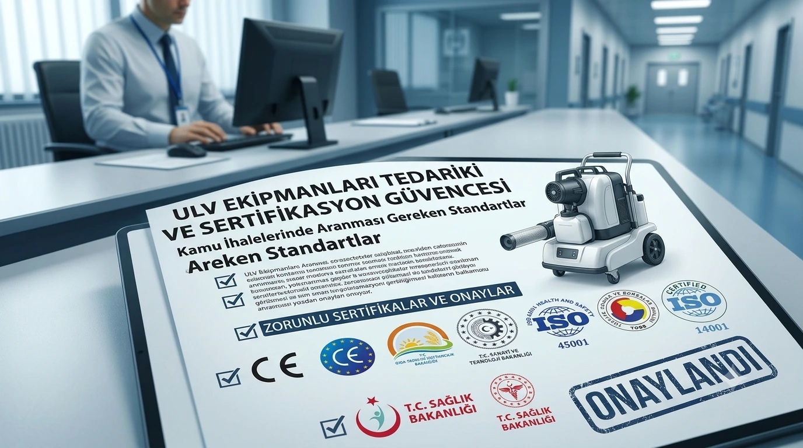

Kamu Alımlarında Sertifikasyon Neden Kritik?
Kamu kurumlarının ilaçlama ve dezenfeksiyon ekipmanı tedarik ederken CE sertifikalı ULV cihazı gibi şartlar araması, sadece bürokratik bir formalite değil, hem yasal uygunluk hem de halk sağlığı güvencesi açısından gereklidir. Bu yazıda, ihale şartnamesi hazırlayan kamu görevlilerinin bilmesi gereken temel sertifika türlerini ve önemini ele alıyoruz.
CE Sertifikası Ne Anlama Gelir?
CE işareti, bir ürünün Avrupa Birliği'nin sağlık, güvenlik ve çevre koruma standartlarına uygunluğunu gösterir. ULV ilaçlama makineleri için CE sertifikası, cihazın elektrik güvenliği, mekanik dayanıklılık ve kullanıcı güvenliği açısından gerekli asgari standartları karşıladığının kanıtıdır.

TSE Belgesinin Rolü
Türk Standartları Enstitüsü (TSE) belgesi, ürünün Türkiye'deki ulusal standartlara uygunluğunu gösterir. Kamu ihalelerinde TSE belgesi genellikle zorunlu bir şart olarak yer alır ve yerli üretim ekipmanların güvenilirliğinin bir göstergesidir.
ISO 45001, ISO 9001 ve ISO 14001 Sertifikalarının Anlamı
- ISO 45001 (İş Sağlığı ve Güvenliği Yönetim Sistemi): Üretici firmanın, hem kendi çalışanlarının hem de ürünün son kullanıcılarının güvenliğini önceliklendiren bir yönetim sistemi kullandığını gösterir. - ISO 9001 (Kalite Yönetim Sistemi): Üretim süreçlerinin standartlaştırılmış, tutarlı ve kalite kontrole tabi olduğunun güvencesidir. - ISO 14001 (Çevre Yönetim Sistemi): Üretici firmanın çevresel etkisini yönetme konusunda sistematik bir yaklaşıma sahip olduğunu gösterir.
Bakanlık Onayları: T.C. Sağlık ve Tarım Bakanlıkları
ULV cihazlarının T.C. Sağlık Bakanlığı'nın halk sağlığı düzenlemelerine ve T.C. Gıda Tarım ve Hayvancılık Bakanlığı'nın tarımsal ilaçlama ekipmanlarına yönelik düzenlemelerine uygun olması, hem yasal zorunluluk hem de uygulamanın güvenilirliği açısından önemlidir.
İhale Şartnamesi Hazırlarken Pratik Öneriler
İhale şartnamesi hazırlayan kamu görevlilerine önerimiz, sadece "CE belgeli olmalıdır" gibi genel ifadeler yerine, talep edilen tüm sertifikaları (CE, TSE, ISO 45001, ISO 9001, ISO 14001, ilgili bakanlık onayları) açıkça listelemeleridir. Bu, hem ihale sürecinin şeffaflığını artırır hem de düşük kaliteli, belgesiz ürünlerin teklif verme ihtimalini ortadan kaldırır. Duru U.L.V. Teknoloji Sistemleri olarak, tüm bu sertifikalara sahip ürünlerimizle kamu kurumlarının ihale süreçlerine güvenle katılabiliriz; detaylı belge talepleri için iletişim sayfamızdan bize ulaşabilirsiniz.